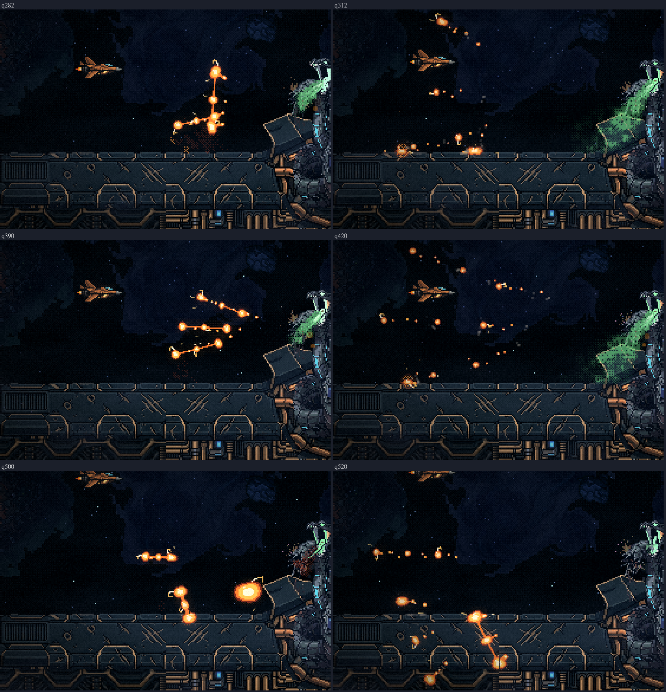
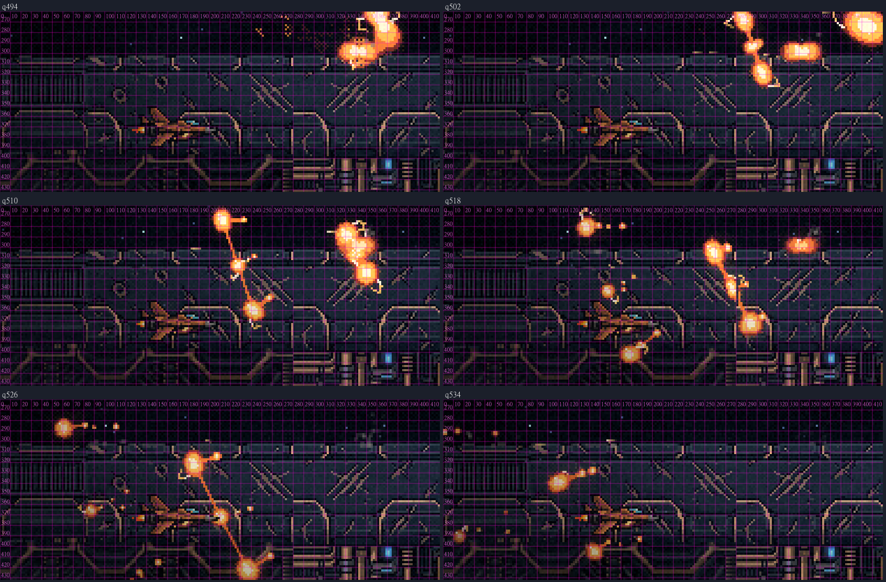
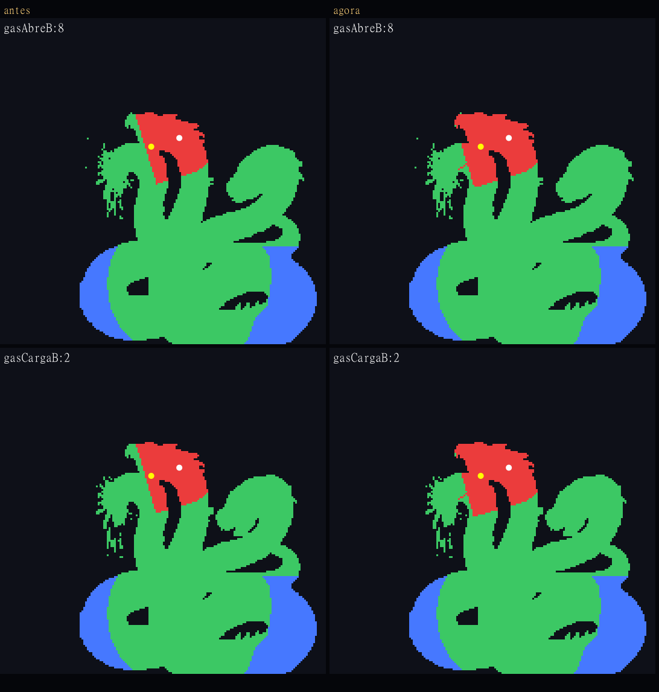
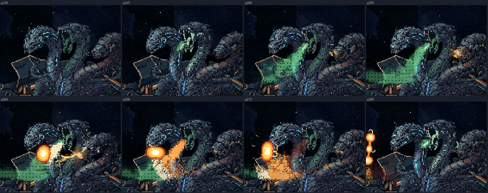
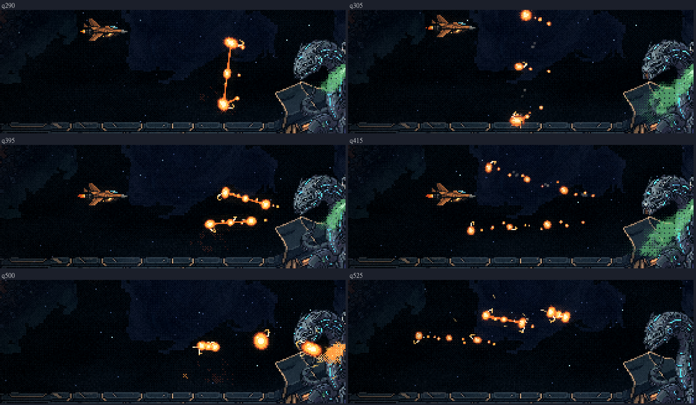
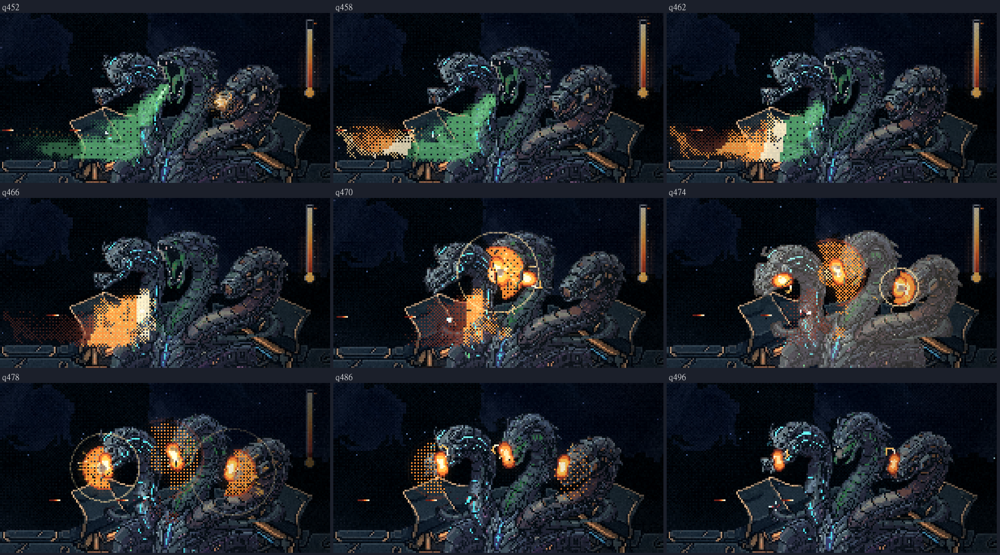
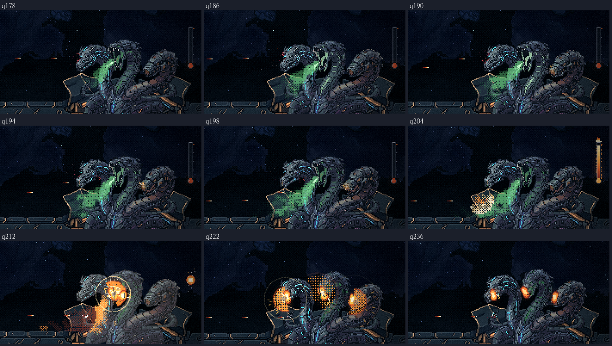
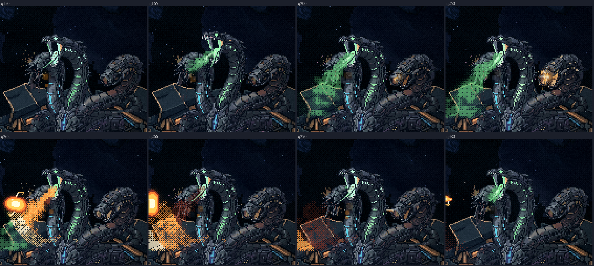
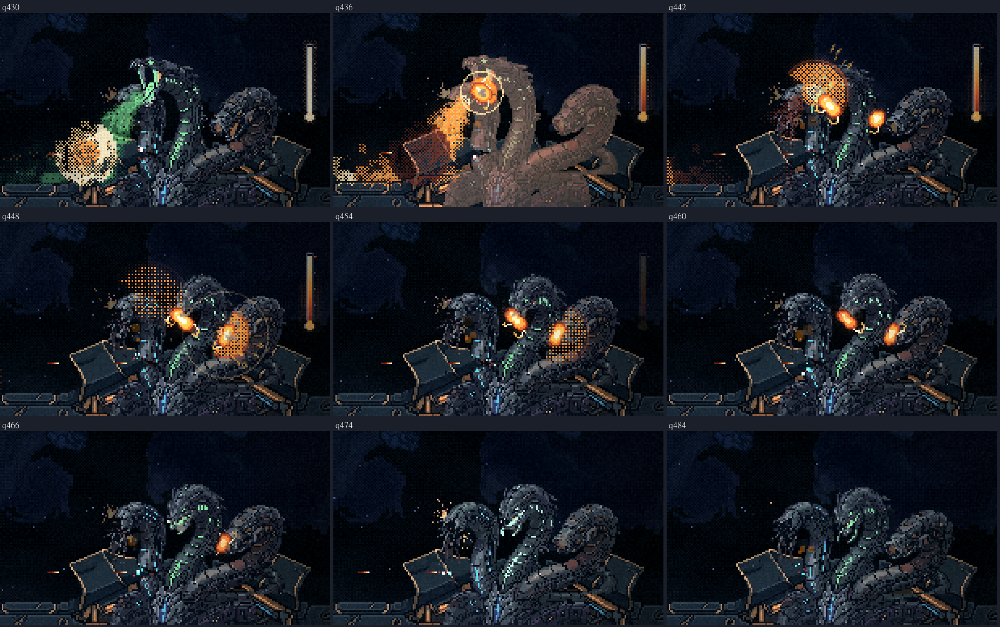

A Serpente: o gás + faísca no jogo
03/11/2026 · pausa 5, nas formas A e B · nada foi commitado.
Depois das suas respostas
A sequência nova do gás na forma B
A forma A segue com o leque, os trilhos e a fila. A B ganhou três golpes próprios.
O casco não é chão. Ele fica no fundo, e a nave pode descer por cima dele até a borda de baixo da tela. Quem se esconde embaixo da crista escapa das geleias, que estouram nela. Por isso o último golpe da B atravessa a crista e cobre essa faixa:
- Rasteira: uma geleia na direção da nave, que rasga em três como o leque, e outra que corre rente à crista e estoura nela. O certo é subir.
- Cortina: três trens de uma vez: um acima da nave, um na linha dela e um rente à crista. O certo é meio passo para o vão entre o de cima e o do meio.
- Fila funda (o último): três geleias em ritmo. A primeira vai na nave; as outras duas atravessam o casco para baixo e rasgam em leque, cobrindo a faixa onde a nave se esconderia. O certo é continuar subindo; quem se escondeu embaixo do casco nas outras é queimado aqui.


Medido no jogo, em quatro voltas:
- a esquiva certa passa nos três, com folga de 18,1 px (rasteira), 14,0 px (cortina) e 61 px (fila funda), acima do mínimo de 12;
- a nave parada e a que fica rente acima da crista são queimadas nos três;
- a nave escondida embaixo do casco escapa da rasteira e da cortina, como você queria, e é queimada na fila funda;
- não sobra esconderijo: com o mesmo código, testei 100 pontos embaixo do casco (5 colunas, de y 152 a 211). Na fila funda, nenhum fica seguro.
Para fechar a faixa toda, os dois leques de baixo miram em y 168 e 196 e voam a 135 px/s. Mais devagar, eles chegavam frios na beira esquerda (só a geleia acesa queima) e deixavam um ou dois cantos seguros. Antes disso, a cortina subiu o trem de cima de 48 para 54 px acima da nave, para a folga passar de 11,7 px.
A boca aberta conta como cabeça
Olhando de perto, o que tampava a cabeça da verde durante o gás era principalmente o toco da azul morta, curvado logo ao lado; as mandíbulas abertas também ficavam de fora. Agora, nos gestos, a cabeça vai um pouco além da boca e pega as mandíbulas, e a garganta acesa também conta. O toco continua sendo corpo.
- Na B, durante o gás, a cabeça passa a ser acertável de frente em 11 a 17 linhas de tiro. Antes eram 2 a 4.
- Na A conferi os gestos da azul (tiro, chuva, cercos, raio, gás): nenhuma outra cabeça entra.
- Parada no posto, nada muda.

O que entrou
É o gás das rodadas 5 a 7 e 13 que você aprovou:
- A verde abre a boca e solta o gás para baixo, em leque e aos sopros. No casco ele se espalha num banco baixo na frente dela.
- A laranja carrega 2,5 s (a boca brilha, ela recua tremendo) e golpeia um bolsão do gás por trás. O estouro joga geleia em chamas na nave, numa das três esquivas, em rodízio:
- leque: uma geleia que rasga em três de través: saia da linha;
- trilhos: duas geleias, acima e abaixo da nave: fique parado;
- fila: três geleias em ritmo: continue se mexendo.
- Os tiros que atravessam o gás enchem o termômetro ao lado dela. Cheio, o fogo volta pelo sopro até a boca da verde, a geleia gruda nas caras e queima: o contra, 15% da vida da forma, num toque só. As cabeças se encolhem.
- Com o INCENDIÁRIO, o gás acende no primeiro toque, e o termômetro pega fogo e estoura.
- Só a geleia acesa fere. O gás fino do lado da nave só pisca.
Forma A
Forma B (os gestos feridos e furiosos)
Ampliado






Medido
- O gás do jogo é o da maquete aprovada, quadro a quadro, nos três registros dela (as esquivas, o contra e a carta: 466, 418 e 184 quadros). Não há diferença nenhuma na posição e no tamanho de cada geleia, no termômetro nem nas cabeças. Com o sorteio da física trocado de propósito, a comparação acusa 255 quadros de geleia diferentes: ela pega erro.
- No jogo, a esquiva certa passa e a errada é mordida, nas duas formas. A folga mínima entre a geleia acesa e a nave, na esquiva certa:
- forma A: leque 16,8 px, trilhos 17,9 px, fila 16,3 px;
- forma B, com a sequência nova: veja acima.
- O contra: atirando pelo gás de verdade, o termômetro enche (no segundo 10,0 do gás na A e 9,4 na B), ela perde 15 de 100 num toque só, e as cabeças se encolhem.
- A carta: o gás acende 0,09 s depois do primeiro tiro que toca o gás (0,01 s na B).
- Ela continua no posto, o corpo leva dano, os tiros comuns seguem iguais, e a fase 3 roda inteira até o hangar com a chuva, o raio e o gás no ciclo.
O que resolvi no caminho (você pode vetar)
- Os tiros que contam para o termômetro: o jogo acompanha cada tiro que entra no gás e conta uma vez só, quando ele chega no corpo dela.
- Nos trilhos, a esquiva errada é subir para um trilho, porque ficar parado é a certa ali. No leque e na fila, a errada é ficar parado. É o que a sonda testa.
- O gás que sobra continua se desfazendo depois que a habilidade acaba, sem segurar a luta.
- Os números de cada golpe (tamanho, velocidade, mira) ficam por forma, para calibrar jogando.
Para você conferir
- A sequência nova da B (rasteira, cortina, fila funda) ficou como você queria?
- Quais são os próximos passos? Pelo plano, falta a troca de forma no meio de uma habilidade, o desempenho, o resto do jogo e a folha final com todas as habilidades.